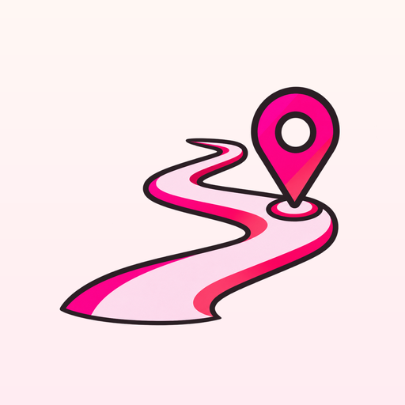
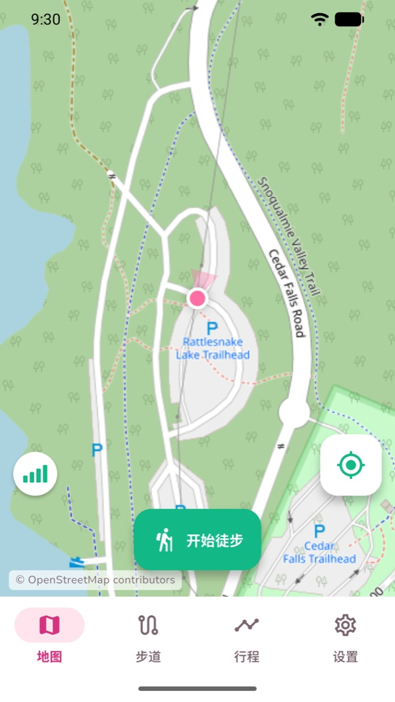
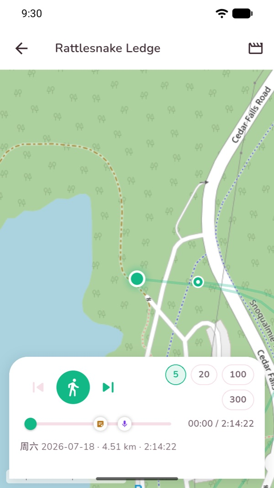
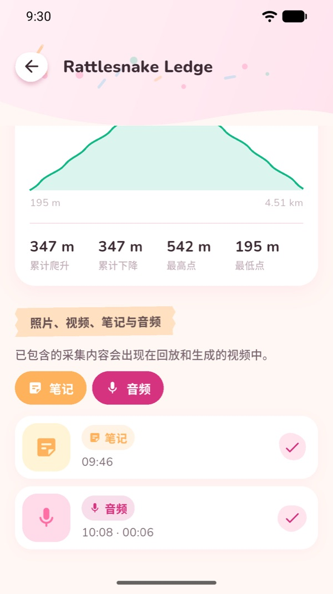
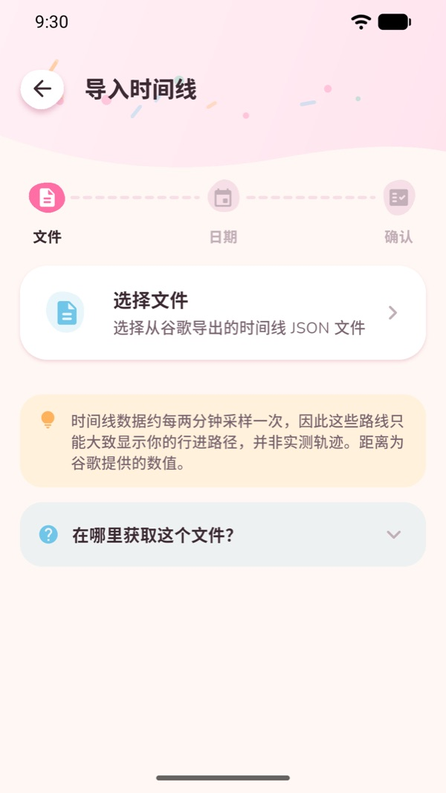
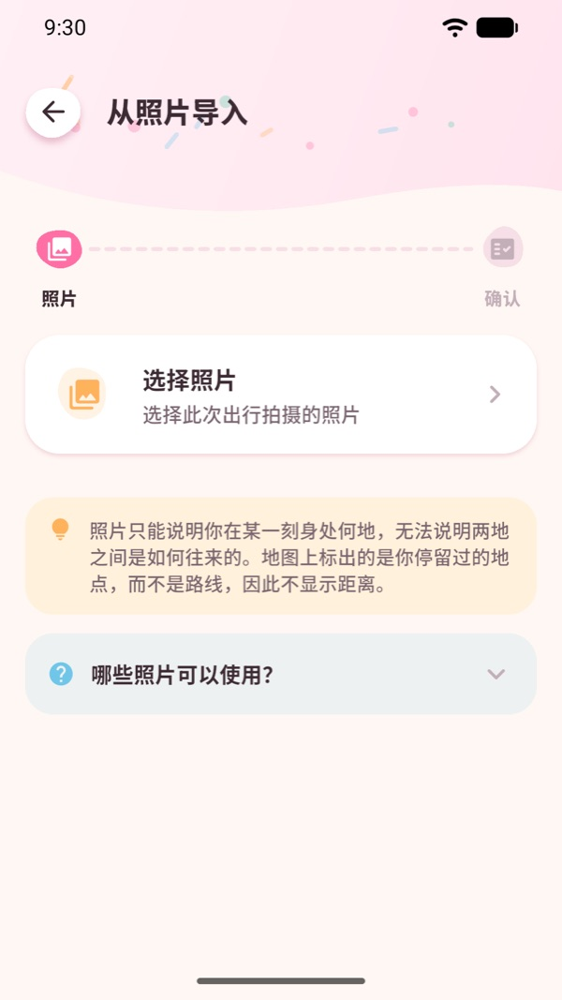
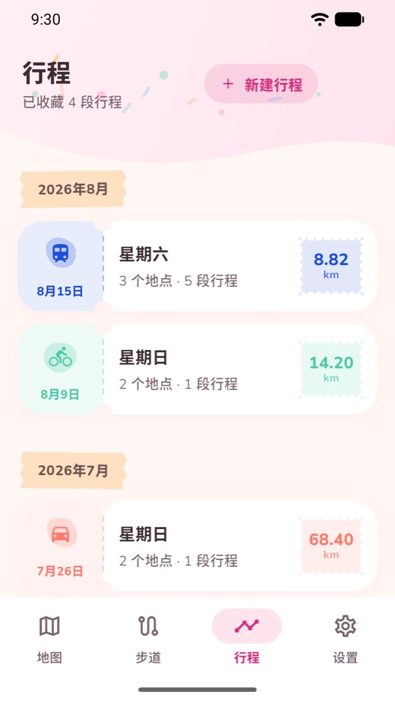
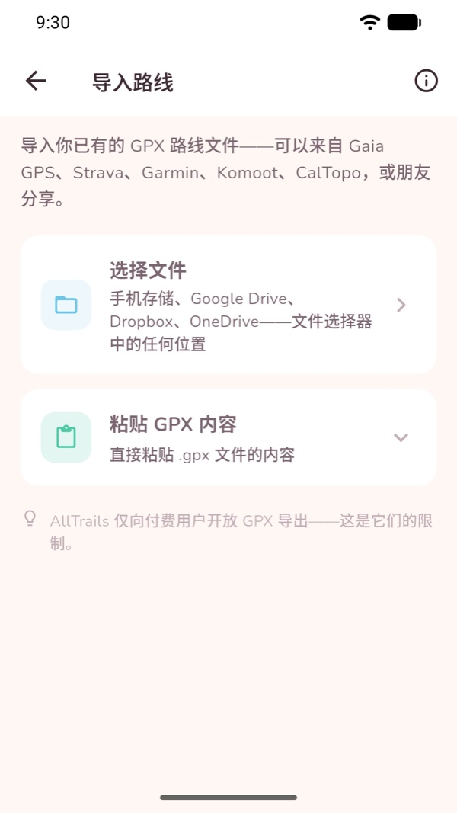

拾光旅行
去过的地方，留成永远的回忆。
拾光旅行帮你留住走过的每一天。边走边记录一次徒步，或者把已经走过的行程重新找回来——然后在地图上重看，并保存成影片。
在 Google Play 下载 免费 · 无需账号 · 没有广告拾光旅行能做什么
记录徒步
熄屏、装进口袋、一路没有信号，GPS 都照样记录。切换到别的应用不会中断；万一中途没电，下次打开会问你要不要接着记。
留住当时的样子
照片、视频、语音备忘和文字笔记，边走边存，自动钉在路线上的那个位置。
生成行程
导入 Google 地图时间轴，或者挑几张带定位的旅行照片。两种方式都能得到一段可以在地图上回看的行程。
重看这一天
路线一点点画出来，照片在当时的位置浮现，语音在走到那里的时候响起。
保存成影片
把徒步回放导出成 MP4——一段属于你这一天的短片，存进相册或随手分享。仅限 Android。
只留在你的手机里
不需要注册，没有订阅，也没有广告。你的轨迹、照片、笔记和录音都不会离开这台设备。
使用方法
记录一次徒步
打开 地图 标签，点 开始徒步。就这么简单——不用选运动类型，也没有什么要先设置的。
走起来之后，顶部会显示用时、距离、速度、爬升和步数。你可以锁屏把手机收起来，记录会在后台继续。
结束时点 停止，这次徒步就会保存到 步道 标签里。

加入照片、视频、笔记和语音
徒步进行中，地图上有三个按钮：相机、麦克风 和 笔记。
照片和视频都在应用内拍摄，所以拾光旅行从来不需要访问你的相册。每一次拍摄都会带上当时的位置和时间。
结束后打开这次徒步，所有瞬间都会列出来，每一条都可以单独决定要不要出现在回放和导出的影片里。

看这次徒步回放
打开一次徒步，点 回放。路线会从起点一路画到终点，地图跟着走。
你留下的瞬间会出现在进度条上。回放走到那里时，照片滑出来、笔记展开、语音响起。
拖动进度条可以前后移动，用倍速按钮可以跳过慢的那一段。

把回放导出成影片
在徒步页面或回放页面选择导出。拾光旅行会把回放录成 MP4：先是一个拉开的全景，然后沿着路线飞一遍，最后再拉回来收尾。
飞行段的时长在 设置 → 回放影片长度 里设置（15 到 60 秒），照片和笔记停留多久也在那里调。
做好的影片会存进相册，也可以直接从应用里分享。
影片导出仅限 Android，并且只针对记录下来的徒步，不适用于行程。

用 Google 地图时间轴生成行程
先在同一台手机上从 Google 地图导出时间轴：Google 地图 → 头像 → 你的时间轴 → 右上角三个点 → 位置和隐私设置 → 导出时间轴数据，你会得到一个 Timeline.json 文件。
回到拾光旅行，打开 行程 标签，点 新建行程，选择时间轴那一项。选好文件，选一个日期范围，然后导入。
你出行过的每一天都会变成一段独立的行程，每一段路都会按出行方式用不同颜色画出来——步行、骑行、开车、公交、地铁、火车、有轨电车、轮渡、飞行。
真实的导出文件可能有 90 MB 甚至更大。拾光旅行是流式读取而不是整个加载，所以界面不会卡，进度是真的，而且随时可以取消。

用照片生成行程
在 行程 标签选 新建行程，选照片那一项，然后挑出这趟旅行的照片。
拾光旅行会读取每张照片里存着的位置和时间，按顺序串起来。它用的是系统相册选择器，所以不需要相册权限——它只能看到你亲手挑给它的那几张，而且只读信息，不会复制照片。
没有位置信息的照片——大多数截图、下载的图片，以及从聊天软件里传过来的——会被统计并告诉你，而不是悄悄丢掉。

打开、回放和导出行程
行程 标签会按月份收集你导入的每一天。
打开其中一天，可以看到地图、停留点和路段，以及各种出行方式各走了多远。点 播放行程，这一天就会在地图上走一遍，切换方式时会标出来。
每一段行程都是一个属于你的 .geojson 文件。导出之后，任何地图工具都能打开。

导入和导出自己的路线
在 步道 标签里，你可以从 Gaia GPS、Strava、Garmin、Komoot 或 CalTopo 导入 GPX——选文件、从云盘里拿，或者直接把文本粘贴进来。邮件、云盘和文件管理器里的 .gpx 也可以直接用拾光旅行打开。
打开一条步道，点 沿这条步道开始徒步 就能跟着走；步道会画在你的实时轨迹下面，偏离时会提醒你。
原路返回 会把你刚走过的路变成回去的路线。任何徒步或步道都能导出成 GPX。

地图与离线使用
拾光旅行提供两种底图——街道视图 和带地形的 户外视图。两种都免费且不需要密钥，对你和对我们都不需要账号或 API key。
你看过的地图区域会留在手机上，所以在家里看过的地方，到了登山口没信号也画得出来。GPS 记录本身完全不需要联网。
说得准确一点：拾光旅行缓存的是你浏览过的区域，并没有整片区域批量下载的功能。所以出发前，最好先把要去的地方在地图上看一遍。
常见问题
拾光旅行是免费的吗？
是的——免费下载，不需要账号，没有订阅，没有内购，也没有广告。
没有信号也能用吗？
GPS 记录完全不需要联网。地图瓦片需要：你之前看过的区域会留在手机上，离线也画得出来，所以出发前先浏览一下路线会更好。
我的数据会上传吗？
不会。徒步、照片、视频、笔记和语音都存在你自己的手机里，没有云同步，也没有账号。应用会发送匿名的崩溃和诊断报告，用来修复问题。
导入照片是不是就把整个相册给应用了？
不是。它用的是系统相册选择器，应用只会拿到你选中的那几张照片。它读取位置和时间，而不是复制照片，并且完全没有相册权限。
行程和记录下来的徒步一样吗？
不一样，而且这个区别很重要。Google 时间轴大约每两分钟采样一次，也不含海拔，所以行程只能告诉你去过哪里、怎么去的，而不是你实际走了多远。显示的距离是 Google 自己的数据，没有配速也没有步数。照片行程更是完全不显示距离。想要真正测量出来的轨迹，请记录一次徒步，或者导入 GPX。
行程能导出成影片吗？
目前还不能。影片导出录制的是徒步回放，并且仅限 Android。行程可以在应用内回放，也可以导出成 GeoJSON。
支持哪些语言？
English、简体中文 和 繁體中文，长度单位可选公制或英制。
隐私
拾光旅行把你的徒步、媒体和行程都存在你自己的设备上。完整内容见隐私政策。